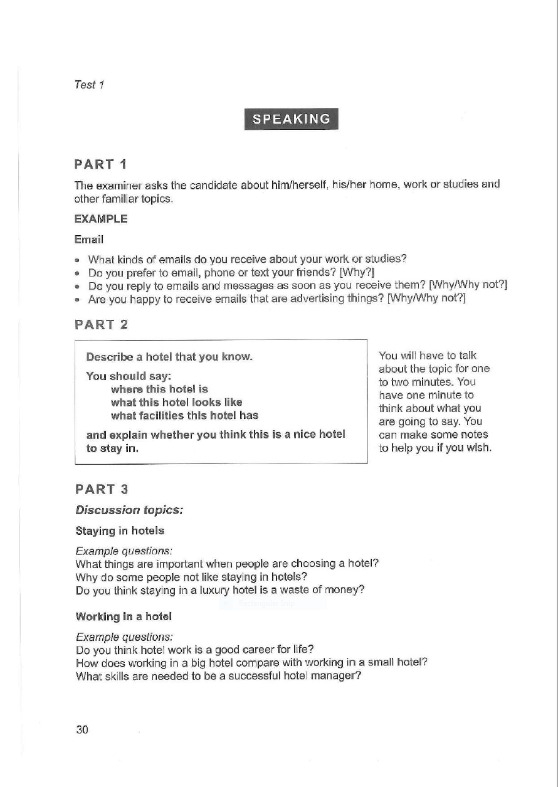

About IELTS Speaking Test
The IELTS Speaking test takes 11–14 minutes and is a face-to-face interview consisting of three parts:
- Part 1 (4–5 minutes): An introduction and interview where you answer familiar questions about yourself, your family, studies, work, and interests.
- Part 2 (3–4 minutes): A "long turn" where you are given a task card (cue card) and have 1 minute to prepare before speaking about a specific topic for 1 to 2 minutes.
- Part 3 (4–5 minutes): A two-way discussion where you explore more abstract, deeper ideas relating to the Part 2 topic.
Example:
Part 1
The examiner asks the candidate about him/herself, his/her home, work or studies and other familiar topics.
Example:
Email
- What kinds of emails do you receive about your work or studies?
- Do you prefer to email, phone or text your friends? [Why?]
- Do you reply to emails and messages as soon as you receive them? [Why/Why not?]
- Are you happy to receive emails that are advertising things? [Why/Why not?]
Part 2
You will have to talk about the topic for one to two minutes. You have one minute to think about what you are going to say. You can make some notes to help you if you wish.
Describe a hotel that you know.
You should say:
- where this hotel is
- what this hotel looks like
- what facilities this hotel has
and explain whether you think this is a nice hotel to stay in.
Part 3

IELTS Speaking Frameworks
A.R.E. Framework
- A - Answer
- R - Reason
- E - Example/Explanation
For question types:
- Personal Questions
- e.g., "Where are you from?"
- Answer: "I'm from Hong Kong, specifically living near The Peak."
- Reason: "It's a very famous mountainous area known for its stunning views of the city skyline."
- Example/Explanation: "I love walking around the trails on weekends because it's a great way to escape the busy city life."
- e.g., "Do you work or are you a student?"
- Answer: "I'm currently working as a marketing executive for a tech company."
- Reason: "I chose this field because I'm passionate about digital communication and consumer behavior."
- Example/Explanation: "On a typical day, I manage our social media campaigns and analyze data to see how we can improve our outreach."
- Opinion or Preference Questions
- e.g., "Do you prefer living in the city or the countryside?"
- Answer: "I definitely prefer living in the city over the countryside."
- Reason: "This is primarily because urban areas offer unparalleled convenience and access to career opportunities, lifestyle amenities, and public transit that you simply cannot find in rural settings."
- Example/Explanation: "For instance, living in a major city means I don't need to own a car; I can walk to the grocery store, take a quick subway ride to work, and have access to world-class restaurants or medical facilities just minutes from my front door. In contrast, when I stay at my grandparents' rural home, even buying basic groceries requires a twenty-minute drive."
- Cause and Effect/Problem-Solution Questions
- e.g., "What is a major cause of traffic congestion in modern cities?"
- Answer: "A primary cause is the lack of reliable or affordable public transportation options."
- Reason: "When trains or buses are unreliable, residents feel compelled to drive their own vehicles, which floods the roads with cars."
- Example/Explanation: "In my city, when the main subway line was shut down for maintenance last winter, thousands of commuters took taxis or drove instead, resulting in hours of gridlock across the downtown core."
- Trend and Social Change Questions
- e.g., "How have reading habits changed over the last decade?"
- Answer: "People are shifting heavily away from physical books toward digital formats."
- Reason: "This is because smartphones and e-readers offer instant access to massive libraries, making reading significantly more convenient for people on the go."
- Example/Explanation: "For instance, if you look at commuters on the subway today, almost everyone is reading a novel on their phone or a Kindle, whereas ten years ago, you would see many more people holding physical paperbacks."
- Advantage/Disadvantage Questions
- e.g., "What is an advantage of working from home?"
- Answer: "The biggest advantage is the massive reduction in daily stress related to commuting."
- Reason: "By eliminating the need to travel to an office, employees reclaim hours of their day, allowing them to start work relaxed and well-rested."
- Example/Explanation: "For example, my colleague used to spend two hours a day stuck in traffic, which left her exhausted. Now that she works remotely, she uses that time to exercise before logging on, which has greatly improved her productivity."
S.T.A.R. Framework
- S - Situation: Set the scene. Give the listener the context, time, and place.
- T - Task: Explain the specific challenge, goal, or problem you needed to solve.
- A - Action: Describe what you did to address the problem. Focus on your specific actions and skills.
- R - Result: Share the outcome. What happened in the end, and what did you learn?
For question types:
- Open-ended Narrative/Story/Problem-solving Questions
- e.g., "Tell me about a time you faced a challenge."
- Situation: "A couple of years ago, during my final semester at university, I was managing a major group project for our marketing class. Just four days before the final presentation, our lead researcher suddenly came down with a severe flu and had to drop out of the project entirely."
- Task: "This left us with an incomplete data analysis section, and because I was the team leader, it was my responsibility to figure out how to cover his portion of the workload without delaying our submission or compromising the quality of our work."
- Action: "Instead of panicking, I immediately called an emergency video meeting with the remaining team members. I assessed everyone’s current workload and reallocated the missing research tasks based on each person's strengths. To lead by example, I took on the hardest part—the financial forecasting data—and spent that entire weekend teaching myself the necessary software using online tutorials so I could complete the slides."
- Result: "In the end, we managed to pull everything together and deliver the presentation on time. Not only did our group receive an 'A' grade, but the experience also taught me how to stay calm under immense pressure and effectively pivot a team's strategy during an unexpected crisis."
- e.g., "Describe a time you showed leadership"
- Situation: "During my last job as a marketing coordinator, our team lead unexpectedly went on medical leave right as we were launching our biggest digital campaign of the year."
- Task: "I needed to step up to keep the team aligned, manage the workflow, and ensure the campaign launched on time without sacrificing quality."
- Action: "I immediately organized a quick alignment meeting, mapped out everyone's immediate priorities, and set up a daily 15-minute check-in. I also took over as the main point of contact for our external design agency to keep the creative assets moving forward."
- Result: "We launched the campaign on schedule, exceeding our lead-generation target by 15%. When the team lead returned, they commended my initiative, which later led to my promotion to project manager."
- e.g., "Describe when you had to learn something quickly"
- Situation: "At my previous internship, the department suddenly decided to migrate all of our client tracking data from basic spreadsheets to a complex CRM platform that I had never used before."
- Task: "I was tasked with learning the software, successfully migrating the data, and training three other interns on how to use it within one week."
- Action: "I spent my first two evenings completing the platform's free certification courses and built a dummy project to test the importing process. Once I understood the system, I wrote a simple, one-page cheat sheet of our specific workflows and ran a hands-on training session for the other interns."
- Result: "We completed the migration two days ahead of schedule with zero data loss, and the team successfully adopted the new system with no disruption to daily operations."
P.A.R.A. Framework
- P - Point
- A - Analysis
- R - Result
- A - Action
For question types:
- Abstract or Complex Analytical Questions
- e.g., "How do you think AI will change the future of work?"
- Point: "I believe artificial intelligence will transition the future of work away from repetitive, data-driven tasks and shift human labor toward high-level strategy and creative problem-solving."
- Analysis: "This shift is happening because AI models can process massive amounts of information, generate code, and automate routine administrative tasks at a speed and scale that humans simply cannot match. Consequently, the traditional value placed on purely technical or rote execution is rapidly declining."
- Result: "As a result, we will likely see a massive restructuring of the workforce. Routine jobs will diminish, but a new class of roles will emerge—such as AI prompt engineers, workflow integrators, and ethics managers. The professionals who thrive will be those who know how to collaborate with AI rather than compete against it."
- Action: "Therefore, both educational institutions and businesses need to take immediate action by shifting their focus toward soft skills, critical thinking, and continuous technical upskilling, ensuring the workforce is prepared to pilot these tools rather than be replaced by them."
- e.g., "How do you think technology is changing the way people communicate?"
- Point: "I believe technology is making communication more efficient but less emotionally meaningful."
- Analysis: "We can now instantly connect with anyone worldwide through messaging apps and social media, which has obvious practical benefits. However, digital communication lacks the subtle emotional cues we get from face-to-face interaction - things like tone of voice, body language, and genuine presence."
- Result: "As a result, we're seeing increased misunderstandings in digital communications and many people, especially younger generations, struggling with deeper emotional connections and empathy skills."
- Action: "I think we need to consciously balance digital convenience with intentional in-person interactions. Technology should enhance our relationships, not replace human connection entirely."
- e.g., "How is globalization affecting local cultures?"
- Point: "Globalization is creating a more interconnected world, but it is doing so at the expense of eroding unique local cultures and traditions."
- Analysis: "The rapid spread of multinational corporations, global media, and internet culture makes Western lifestyles and consumption habits highly accessible. Consequently, local languages, traditional culinary practices, and regional customs are often marginalized or commercialized to appeal to a broader, global audience."
- Result: "As a result, we are seeing a homogenization of cities worldwide, where distinct local identities are fading, and younger generations are losing connection with their ancestral heritage."
- Action: "To counter this, governments and community leaders must actively fund cultural preservation programs and language classes, using global digital platforms to document and celebrate local heritage rather than let it be overshadowed."
- e.g., "What impact does social media have on young people?"
- Point: "While social media offers unprecedented connectivity, its net impact on young people is negative due to the damage it does to their mental health and self-esteem."
- Analysis: "These platforms are engineered to maximize user engagement, exposing teenagers to highly curated, unrealistic "highlight reels" of their peers' lives. This constant upward social comparison triggers feelings of inadequacy, while the instant gratification of "likes" disrupts natural dopamine regulation."
- Result: "Consequently, rates of anxiety, depression, and body image issues have risen sharply among youth, accompanied by shorter attention spans and a decline in real-world social skills."
- Action: "We need to implement digital literacy programs in schools that teach healthy online boundaries, while parents should establish tech-free zones at home to encourage face-to-face interaction."
- e.g., "How should governments balance economic growth with environmental protection?"
- Point: "Governments must stop viewing environmental protection as an obstacle to economic growth and instead treat sustainability as the primary engine for future economic development."
- Analysis: "Traditional economic models rely on resource depletion and high-emission industries for short-term GDP growth. However, this approach degrades the foundational ecosystems—like clean water, air, and fertile soil—that actually keep an economy viable over the long term."
- Result: "If governments fail to transition, they will face crippling future economic losses from climate-related disasters, collapsing food systems, and massive public health costs."
- Action: "Policymakers must aggressively phase out fossil fuel subsidies and invest heavily in green technology and renewable energy, creating high-paying jobs that actively heal the environment rather than destroy it."
P.E.L.L. Framework
- P - Point: Give your main opinion
- E - Elaborate: Explain your reasoning
- L - Level up: Add more depth or contrast
- L - Link: Connect back to the question
For question types:
- Opinion Questions
- e.g., "Do you think it's better to buy a property or rent a property?"
- Point: "I personally think it's better to buy a property."
- Elaborate: "From my experience, when you buy a property, you're investing your money rather than just giving it to landlords every month. Every payment goes toward building equity in something you'll own."
- Level up: "Over 5 or 10 years, you'll have built substantial wealth through property ownership, whereas with renting, you have nothing to show for all those monthly payments."
- Link: "So while renting might seem easier in the short term, buying is definitely the smarter long-term financial decision."
- e.g., "Is it better to live in a city or the countryside?"
- Point: "I believe it is generally better to live in the city."
- Elaborate: "Cities offer unparalleled convenience and access to opportunities. Everything from career paths and diverse food options to public transit and healthcare facilities is usually just minutes away."
- Level up: "In the modern economy, being in a major urban hub accelerates personal and professional growth because you are constantly exposed to new cultures, networking events, and innovations that you simply won't find in isolated areas."
- Link: "So while the countryside offers peace, the city is ultimately the better choice for anyone looking to maximize their opportunities and lifestyle options."
- e.g., "Should students choose their own subjects in school?"
- Point: "I think students should absolutely be allowed to choose their own subjects."
- Elaborate: "When students have autonomy over their education, they are far more motivated to learn. They can focus on their genuine strengths and passions rather than forcing themselves through topics they find irrelevant."
- Level up: "On a broader scale, allowing tailored education prepares young people much better for the modern workforce, which highly values specialized expertise and deep passion over a rigid, one-size-fits-all skill set."
- Link: "Therefore, giving students the freedom to choose their curriculum results in both happier students and a more capable workforce."
- e.g., "Do you prefer to travel alone or with others?"
- Point: "I prefer to travel with others rather than going solo."
- Elaborate: "Traveling with friends or family allows you to share unique experiences and build deeper bonds. Having someone there to laugh with during mishaps or discuss a beautiful view makes the trip much more fulfilling."
- Level up: "Beyond the emotional connection, group travel also offers practical and safety advantages, as you can split the costs of accommodation and rely on each other if something goes wrong in an unfamiliar country."
- Link: "So while solo travel offers ultimate freedom, traveling with others provides a richer, safer, and more memorable experience overall."
A.D.D. Framework
- A - Acknowledge multiple sides
- D - Discuss both sides
- D - Depend on the context
For question types:
- Analytical or Controversial Questions
- e.g., "Some people think empathy is the best way to help others, while others believe brutal honesty works better. Which approach do you prefer?"
- Acknowledge multiple sides: "That's a tough question, but I think both approaches have their place. They both go hand in hand."
- Discuss both sides: "Empathy is really valuable when someone's going through a major crisis or personal struggle. You can't be brutally honest with someone who's already vulnerable because you might push them away when they need support most.
But on the other hand, if someone is being genuinely harmful or disrespectful to others, sometimes you need to be direct and tell them their behavior is unacceptable. Empathy alone won't change toxic behavior."
- Depend on the context: "So really, it depends on the context and what the person actually needs in that moment. Good relationships require both approaches used at the right times."
- e.g., "Is it better for children to compete or cooperate in school?"
- Acknowledge multiple sides: "That is a classic debate, but I believe both competition and cooperation are essential. They both play a vital role in a child's development."
- Discuss both sides: "On one hand, cooperation teaches children empathy, teamwork, and how to work with diverse mindsets to achieve a shared goal—skills that are critical for healthy social lives and future workplace environments. On the other hand, healthy competition drives individual excellence, teaches children how to handle failure, and motivates them to push their personal limits and work harder to achieve success."
- Depend on the context: "So really, it depends on the lesson being taught. Schools need to balance both: using group projects to build cooperative skills, while utilizing sports, spelling bees, or individual grading to foster a healthy competitive spirit."
- e.g., "Should companies prioritize profits or social responsibility?"
- Acknowledge multiple sides: "This is a major discussion in modern business, but the truth is that profits and social responsibility do not have to be mutually exclusive; in fact, they often reinforce one another."
- Discuss both sides: "A company must prioritize profits to some extent, because without financial viability, it cannot survive, pay its employees, or invest in innovation. However, if a company ignores social responsibility entirely, it risks destroying its reputation, alienating modern consumers who value ethics, and facing regulatory backlash that ultimately harms its bottom line."
- Depend on the context: "Ultimately, the balance depends on the company's stage of growth and industry. A struggling startup may have to focus heavily on basic profitability to survive the short term, whereas an established multinational corporation has the resources—and the obligation—to lead the way in social and environmental responsibility."
- e.g., "Are traditional values or modern values more important?"
- Acknowledge multiple sides: "It is easy to view these two as being in conflict, but I believe a healthy society needs a strong foundation of both traditional and modern values."
- Discuss both sides: "Traditional values, such as family cohesion, community respect, and cultural heritage, are incredibly important because they provide people with a sense of identity, stability, and belonging. However, modern values, like individual freedom, gender equality, and inclusivity, are vital for correcting historical injustices, driving progress, and allowing society to adapt to new global realities."
- Depend on the context: "Therefore, the importance of each depends on the specific challenge a community is facing. When a society is experiencing rapid, disorienting change, traditional values help keep people grounded; when a society is stagnant or oppressive, modern values are necessary to push it forward."
A.D.A. Framework
- A - Answer
- D - Detail (i.e. context, facts, background)
- A - Anecdote (i.e. tell the story with vivid details)
For question types:
- Story-telling Questions
- e.g., "Describe a time when you met someone who became a good friend."
- Answer: "I'd like to talk about the first time I met my childhood best friend."
- Detail: "This happened on my very first day of kindergarten when I was just four years old. The teacher had assigned seats, and I found myself sitting next to this girl with beautiful long braided hair."
- Anecdote: "What struck me immediately was her adorable round face - she looked like a little marshmallow, which sounds silly but that's honestly what I thought as a four-year-old.
There was this cute thing kids do where they stick out their thumb to ask 'Do you want to be friends?' If the other person sticks their thumb back, it means yes. If they ignore you or turn away, it means no.
So I nervously stuck out my thumb toward her, hoping she'd want to be my friend. But she just looked at me and turned away. I was absolutely heartbroken! I couldn't understand how someone with such a sweet face could reject my friendship.
But I didn't give up. I tried again the next day, and the day after that. Eventually, after about a week of persistence, she finally stuck her thumb back out to me. From that moment on, we became inseparable best friends throughout our entire childhood."
- e.g., "Describe a skill you learned as a child"
- Answer: "I'd like to describe learning how to ride a bicycle when I was about seven years old."
- Detail: "This took place in the narrow, paved alleyway behind my childhood home. My dad bought me a bright red, second-hand bicycle with training wheels, but after a few weeks, he decided it was time for them to come off."
- Anecdote: "My dad promised he wouldn't let go of the back of the seat. He held on tightly as I wobbled down the alley, screaming at him every three seconds, "Are you still holding on?!" He kept calling back, "Yes, I've got you!" I finally felt a sudden rush of confidence and started pedaling faster, feeling like I was flying. When I eventually looked back to brag about how fast I was going, I realized my dad was standing about fifty feet behind me, waving and cheering. The sheer shock of realizing I was riding on my own made me instantly panic, lose my balance, and crash straight into our neighbor’s giant, empty plastic trash can. But despite the bruised knees and the dented plastic, I got right back up, absolutely thrilled that I had actually ridden a bike on my own."
- e.g., "Talk about a place you visited that surprised you"
- Answer: "I'd like to talk about my trip to Tokyo, Japan, which surprised me by how quiet and peaceful it was despite being the most populated metropolitan area in the world."
- Detail: "I visited Tokyo a few years ago during the spring. I expected a chaotic, loud, and overwhelming concrete jungle filled with pushing crowds and constant city noise."
- Anecdote: "On my second morning, I got caught in the middle of the famous Shibuya Crossing—the busiest pedestrian intersection in the world—during rush hour. I braced myself for the usual push-and-shove of a major city. Instead, when the light turned green, thousands of people silently surged forward in perfect, synchronized harmony. No one bumped into me, no one was shouting, and the loudest sound was the soft rustle of footsteps. Right in the middle of the crossing, a businessman accidentally dropped his briefcase, spilling papers everywhere. Before I could even react, three strangers immediately knelt down, wordlessly helped him gather everything in seconds, bowed politely, and kept walking. It was an incredible, almost surreal display of collective respect that completely shattered my expectations of big-city chaos."
- e.g., "Describe someone who influenced your life"
- Answer: "I’d like to describe my high school English teacher, Mr. Davis, who completely changed how I view my own potential."
- Detail: "He was an eccentric man in his late fifties with messy gray hair, who wore mismatched socks and always carried a heavily annotated, worn-out copy of To Kill a Mockingbird in his jacket pocket."
- Anecdote: "I was a very quiet, insecure student who hated speaking up in class. One day, we had to write an essay about a personal hardship. I poured my heart into it but was terrified of what he would think. When he handed the papers back, mine didn't have a grade on it. Instead, he had written, "See me after class." I spent the whole day convinced I had failed. When the bell rang, I nervously walked up to his desk. He looked at me, pulled out my essay, and read my favorite paragraph aloud in his booming voice. Then he looked me dead in the eye and said, "You have a voice that can move people, but you're hiding it behind your silence. Stop doing that." That was the first time an adult had ever truly validated my intellect, and that single conversation gave me the confidence to start speaking up and believing in myself."